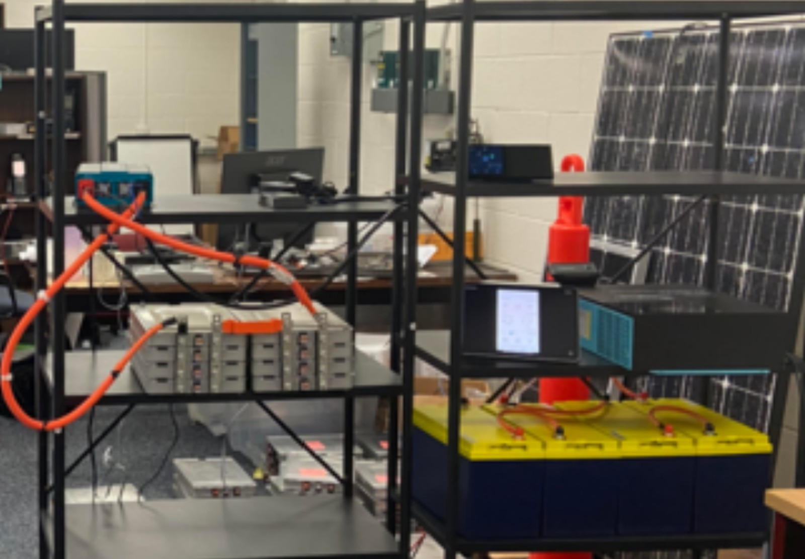

Microgrids and Second-Life Batteries
A bench-scale solar microgrid assembled from repurposed Nissan Leaf battery modules, now being recommissioned so new students can continue the work.
- Recommissioning
- 2022–present
- Microgrids
- Battery circularity
- Energy technology

In plain English
When an electric car's battery can no longer give a driver enough range, a large share of its capacity often remains. Reusing those modules as stationary storage for solar power could postpone recycling and make storage cheaper. Since 2022 the SEAR Lab has explored this idea at bench scale. Students obtained a used Nissan Leaf battery pack, took it apart, measured and catalogued its modules, and assembled a small rolling setup with a solar panel, a charge controller, an inverter and Leaf modules.
Along the way, students ran charging tests on single modules and built a low-cost monitoring system in which sensors report over Wi-Fi to a small Raspberry Pi computer that stores the readings and shows them on a dashboard. The hardware has sat idle since those students graduated, so the lab is now recommissioning it: checking the equipment, getting safety procedures approved and writing the build documentation the first teams never recorded. The work is part of the lab's wider research on battery circularity: reusing, remanufacturing and recycling lithium-ion batteries.
Main points
- In 2022 students took apart a second-life Nissan Leaf battery pack and recorded each module's voltage by hand.
- The bench is designed around a 12-volt system that links a small solar panel, a charge controller, an inverter and Leaf modules.
- A monitoring stack (ESP32 sensors, MQTT messaging, and InfluxDB and Grafana on a Raspberry Pi) logged live readings in 2023.
- A 2022 Research Experiences for Undergraduates (REU) project designed scalable, affordable microgrids around this bench.
- Recommissioning starts with an equipment check and safety sign-off before any new bench work.
Interactive demoBattery recycling →
People
- Erick C. Jones Jr., PhD, PEPrincipal Investigator · SEAR Lab directorin
- Sanjeev JoshiTeam lead, repurposed Leaf energy-storage project and microgrid monitoring stack; MS Engineering Management (RAID Scholarship)in
- Cecilia RomeroREU undergraduate (2022), microgrid design; BS Software Engineeringin
Team for the restart: names to be added from the lab personnel sheet. Profiles marked in link to LinkedIn. More past and present lab members are on the SEAR Lab team page.